米可吉他音樂學院
MIKO Guitar Academy
從第一個和弦開始，點燃每一位學員的音樂熱情。以「自信教育」為核心理念，提供系統化、國際化的吉他教育，培育從啟蒙到專業演奏家的完整學習之路。
- M-Stage 自信教育系統
- M-PASSPORT 數位學習護照
- 全齡教學方案（3–80 歲）
- 師資國際進修網絡
一切，都從一次歡樂的吉他體驗開始。我們深信，音樂能為每個人帶來無可取代的自信。我們將這份自信化作推力，致力於建立遍布全球的吉他交響網絡，讓不同城市的演奏者能匯聚於同一個舞台。這不僅是規模的擴展，更是一場文化傳承的運動——我們期許這群充滿熱情的人們，能共同奏響當代的旋律，並在時間的淬鍊下，成為兩百年後世人仰望的古典標竿。
以啟蒙、演繹、珍藏，構築全方位吉他藝術生態鏈。

從第一個和弦開始，點燃每一位學員的音樂熱情。以「自信教育」為核心理念，提供系統化、國際化的吉他教育，培育從啟蒙到專業演奏家的完整學習之路。
以精湛合奏重現吉他作為古典樂器的深度與細膩。樂團連結國內外演奏家，於各大舞台演繹跨越時代的經典與當代原創作品——讓吉他交響化。

嚴選全球頂級品牌，打造專屬於演奏家與收藏家的精品空間。代理日本品牌 湘南吉他 Southmarine Guitar 以工藝與音色詮釋東方美學。
"We compose today's melody,
so that two centuries from now, it becomes the classic."
—— 為兩百年後的經典，奏響當代的弦律 ——
從國際賽事到跨國學術合作，米可吉他的腳步走向世界，建立亞太吉他文化的新座標。
匯聚世界級評審與新世代演奏者的國際級舞台，發掘並表彰最具潛力的吉他音樂家。IGOA 賽事規範、線上報名系統、歷屆優勝榮譽完整呈現。
Visit Competition INTERNATIONAL · 國際賽事攜手享譽國際的日本新堀藝術學院，引進其吉他合奏教學體系——學術權威、台日學術連結、專業證照體系。
Visit Niibori TW JAPAN × TAIWAN · 台日合作南向的第一站，將米可的教育與演奏理念帶入東南亞。新加坡 10 週年演奏會實錄，見證亞太吉他文化交流的新據點。
Visit Singapore SINGAPORE · 亞太樞紐吉他學習、創業故事、練琴方法、音樂教育、親子陪伴與學員故事——由主持人茱莉亞，以聆聽者的視角，記錄米可從一間小教室走到集團化經營的每一步。
Listen On
兩百年的經典不會停止演化，我們用當代的工具，寫下一個世紀的旋律。
— LEO CHAO · 趙柏群
由米可吉他集團創辦人 趙柏群 Leo Chao 親筆撰寫的思想引擎， 探討 AI 時代下的音樂產業轉型，以及文化領導力的實踐之道。
這不只是一個部落格，更是集團策略、教育理念與未來版圖的公開筆記—— 讓每一位關心音樂與文化傳承的讀者，與我們共同看見下一個百年。
🎙 Leo's Podcast · 夢想談｜彈夢想